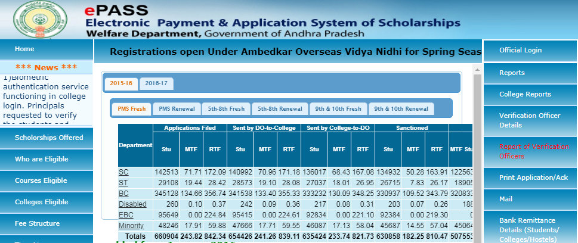

AP ePASS 2020: The scholarships in Andhra Pradesh state are intended for learners who are a member of the education system. The main aims of Epass scholarship in Andhra Pradesh are, to help the worthy students who cannot afford learning and the government will pay the expenditure fee designated by the colleges in the form of scholarships.
The Electronic Payment and Application System of Scholarships (Epasss) is essentially an online scholarship payment system that was conceived by the Andhra Pradesh government to assure the faster disbursal of scholarships to the economically underprivileged students. It is a very good action taken by the administration of Andhra Pradesh to award the scholarship to the students whose families are not able of giving their children for study for obtaining higher knowledge or the candidates who belong to SC/ST/BC class.
It attracts the scholarship schemes for students who belong to SC, ST, BC, EBC, Minority and Disabled categories. Some of the famous scholarship schemes are listed on the Andhra Pradesh ePASS website which includes post-matric scholarships, pre-matric scholarships, overseas scholarships, skill up-gradation services, corporate admissions, etc. bc welfare apcfss.in Read the article moreover to get complete information about the ePASS scholarship AP, ePASS Status AP, eligibility, awards, application procedure, Scholarship Status AP and more.
AP ePASS List of Scholarship
Let us discuss here, AP Scholarship List 2019-20, who provides these scholarships, kind of financial assistance is given to it when to apply for it, etc. in this section. Check the table below for further details.
- Pre matric Scholarship for SC/ST/BC and Disabled Welfare
- Corporate Admission Scholarship
- GRE, TOEFL, IELTS Coaching Registration
- Overseas Scholarship for Kapu Students
- Overseas Scholarship for BC Students
- Overseas Scholarship for EBC Students
AP ePASS Overview
| Organization Name | Andhra Pradesh State Government |
| Scholarship Scheme | ePASS Andhra Pradesh |
| Scholarship Type | Overseas Scholarships Fresh, Renewal Registration For SC or ST Students |
| Mode Of Application Form | Online |
| Official Website | epass.apcfss.in |
AP ePASS Eligibility Criteria
Which Students are Eligible for AP ePASS?
- Students who belong to the categories of SC, ST whose annual parental income is Rs. 200000 or below.
- Students who belong to BC, EBC, Disabled Welfare Students whose parental income is RS. 100000 or below.
- Students whose attendance is 75% at the end of each quarter.
Note: The following category students are not eligible for AP Epass.
Which Students not eligible for AP ePASS?
- Students belonging to the categories other than SC, ST, BC, EBC, and DW(Disabled).
- SC, ST Students whose annual parental income is more than Rs. Two Lakhs and BC, EBC, Disabled Students whose parental income is more than Rupees One lakh.
- All Students pursuing part-time courses, online courses.
- Students admitted under Sponsored seats, Management Quota seats.
- Students drawing the stipend more than the scholarship amount in aggregate per annum.
- Students of BC, EBC and DW students studying the Courses offered by open universities, distant mode, category B seats in MBBS, BDS.
- EBC students studying Intermediate or equivalent courses.
AP ePASS Eligible Courses
Post Matric Courses certified by the concerned University/Board having a term of 1 year and above:
| Group – I | Professional Courses (Degree and PG Courses) in
Medicine |
| Group – II | Other professional and technical graduate and PG including (M.Phil, Ph.D. and post-doctoral research) level courses not covered in Group-I. C.A./I.C.W.A./C.S./ etc., courses, all postgraduate, graduate-level diploma courses, all certificate level courses. |
| Group – III | Degree courses(not covered in group I & II) NIFT (National Institute of Fashion Technology) courses |
| Group – IV | Intermediate ITI/ITCs Vocational courses (Intermediate level) |
Courses not eligible for AP ePASS
Scholarships are not awarded for training courses like
- Aircraft Maintenance Engineer’s Courses
- Private Pilot license Courses.
- Courses at Pre-examination Training Centers of all India and State levels.
AP ePASS Eligible Colleges
- All Post Matric Colleges in Andhra Pradesh approved by the Government of Andhra Pradesh/Competent Authority.
- The list of colleges is communicated by Administrative Departments (Departments of Higher Education, Technical Education, School Education, Health Medical and Family Welfare, Employment and Training) to the Commissioner of Social Welfare.
AP ePASS Timeline
It is necessary to submit the application form online within one month from the date of admission. The principal of the Colleges or schools should issue the bonafide certificate on the same day of submission of the application form (hard copy) in the college.
Field Officer/ASWO
- Verification would be done physically twice in a year.
- Within one month of re-opening of college.
- Within one month from the last date of closing of Admissions.
An officer from any of the Government Department verifies the Certificates and confirms their candidature in the Starting day of AP Epass.
If any candidate missed the process will have to face many problems. Hence, the Government has introduced the Biometric Process of Verification. The school or college can conduct this at any time. The overall process should be completed within one month of submission of the application.
AP ePASS Application Procedure
As you have already given the information on the list of AP Epass scholarship and their eligibility criteria, now it’s time to assemble the information about its application process. Students will be provided by the ePASS application number while registering. Let us now examine how to apply for AP Epas by following these steps given below.
- Visit the official website of the AP Epass, https://epass.apcfss.in/.
- Select the Course for which you want to apply.
- Now, go to the option of pre-matric or post matric as per your demand.
- The students who belong to the scheduled tribe, scheduled caste, BC and Disabled can apply for the pre-matric scholarship program.
- Click on the “Registration button”, to get admission or registration form.
- Provide your Aadhaar and ration card details and all the necessary details.
- Also give details of your parents/guardian, as per directed.
- Provide details of your school or college as well as the course.
- Mention the State bank account number clearly with IFSC code.
- Mention your caste and income certificate details.
- Upload the required documents, enter the captcha and click on the Submit button.
- Your application is submitted now.
- You can take the print out of the application form for future reference.

Documents Required for AP ePASS Scholarship
For AP ePASS Fresh Registrations
- Student last year exam certificate
- Caste certificate
- Aadhar card
- Residential certificate
- Ration Card
- Bonafide certificate
- Birth Certificate
- Income Certificate
- Mothers and fathers ID Proof
- Scan Bank Passbook with the bank account and IFCS Code
For AP ePASS Renewal Registrations
- Student Previous year application numbers
- Student Scanned Aadhar card
- Previews Semester Mark Sheet
- Fathers Aadhar card
- Mothers Aadhar card
- Ration Card
- Current mobile Number
- Marks List according to qualification
- Bank account number details
AP ePASS Application Status 2020
Candidates, who have successfully applied for the AP Epass and filled the application form along with the needed documents can check the status of the application for the scholarship provided by Andhra PradeshBoard, time to time, on the university website. AP ePASS Status check online @ official website which is given below.
With this, they will be able to trace the progress of their application and can get an approach if they will get the scholarship or not. All they have to do is, use their registration ID and password and submit the details to check the application status. Follow the below steps to check the status of Andhra Pradesh State Scholarships for different schemes.
- Visit the official website epass.apcfss.in
- Click on the option “AP Scholarship status tab”
- Next, you will be redirected to the new page.
- Now, fill the required details on this page such as SSC hall ticket number, exam category, the application number, academic year, date of birth.
- Click on the “Get Status” button to know the current status of your application for the scholarship of AP ePASS. Students can also take the print of the application/scholarship status.
Reason for Rejection – AP ePASS Application Rejection
Students application form for scholarships can be rejected for the following condition;
- If the student is not bonafide.
- Incorrect caste or annual Income details.
- Non-submission of caste, Income certificates.
- Non-receiving of renewal proposal.
- Claiming scholarship for same level courses.
- Not recommended by Field Officer.
- Student admitted under management quota .
- Incorrect course & year of study.
- Non-submission of enclosures.
- Incorrect course & year of study.
- Non-submission of hard copy of the application.
- If the student is not physically present.
- Discontinued/Detained students in case of renewals.
- Claiming scholarship for same level courses.
- Previous sanction verification for renewal.
- Non-receiving of hard copy for Fresh.
Important Instructions for AP ePASS
- AP Epass is fairly open for all the candidates belonging to any of the categories such as General, OBC, SC, ST.
- It is important for students to attach a hardcopy of the photocopy of the SBI bank passbook with the application form.
- Candidates must provide their own effective email ID and mobile phone number.
- All the details and documents produced by the applicant must be genuine and authentic. If the given information is obtained wrong, then the application and data collected will be rejected.
- Suspect applications will not be sent for scholarship and will be discarded at the same time.
- Failed students are not eligible and should not apply for the scholarship.
- Candidates who have applied for the scholarship or willing to apply are suggested to not share their individual details, bank account number, IFSC code, class 10th/12th roll number, password, and other delicate information to anyone.
- Candidates can review their application status from time to time on the official website.
- Candidates are required their ID and password produced at the time of application to see the scholarship status.
- Candidates, those who are already enrolled with portal have to renew the account by adding the updates. No new registration is required.
- All updates regarding the scholarship are updated on the official portal in a regular interval of time. Candidates are requested to stay in contact for regular updates.
- Candidates are suggested to check the scholarship updates on the portal on a regular basis. They must obey all the instructions timely and carefully so that they cannot miss the chance to get the scholarship.
FAQ’s on AP ePASS 2020
Question 1.
How much reimbursement, a student can get?
Answer:
The reimbursement of tuition will be dependent on the course you pursue. While most of the courses are eligible for 100% of the tuition fee as fixed by the government. Self-financed courses are eligible only for a maximum of Rs. 20,000 or the actual fee charged by the college, whichever is less.
Question 2.
Can I obtain a scholarship for the previous year?
Answer:
No, the scholarship can be claimed only for the current year. Scholarships for the previous year can not be claimed under any circumstance.
Question 3.
How do I know my verification officer?
Answer:
The District Collector appoints verification officers for one or more colleges depending on the number of students in the college. The verification process is a two-step verification process:
- Verification by the College Principle: All applications to be verified individually by the college and signed by the principal of the college.
- Verification by the verification officer: The verification officer will have to verify all the student in the college an appointed date and time.
The details of the verification officer can be viewed on this website by clicking the verification officer details given on the right side of the web page.
Question 4.
What is the meaning of verification in the scholarship process?
Answer:
The process of verification is essentially meant to check whether the particulars given in the scholarship form are correct as per the documents enclosed. The verification is done in two steps namely college verification and Independent verification.
- College Verification: In this verification, the college has been mandated to verify the documents furnished by each student with the entry made in the application form. Once the verification is completed and all entries are found correct, he would finally sign the same and send it to the department for verification by the verification officer appointed by the District Collector
- Verification by the Verification Officer: the verification officer appointed by the District Collector will conduct physical and documentary verification and submit his report either accepting or rejecting the scholarship application.
- Scrutiny by the Welfare Officer: before each and every application is taken up for sanction it is the responsibility of the welfare officer to satisfy himself of the verification by the college principal and the verification officer and finally sanction the scholarship.
AP ePASS Contact Details
ePASS
Project Monitoring Unit
The Director of Social Welfare
Service Road Opposite to Manipal Hospital,
TG Plaza, Tadepalli,
Vijayawada – 520001.
You can also find more Scholarship Articles for 12th passed, 10th passed Students and many more.